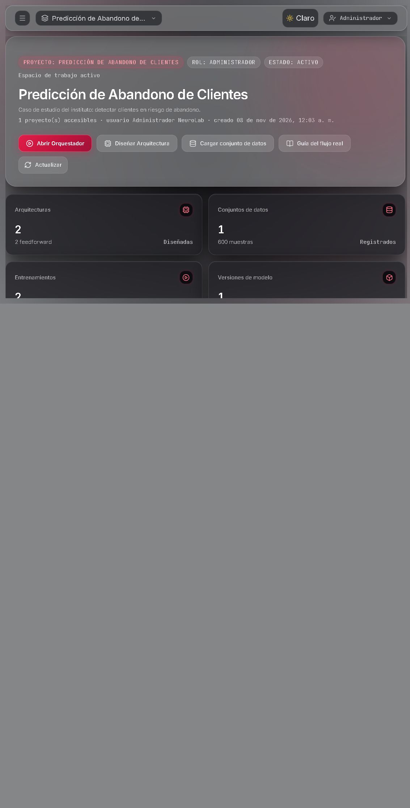
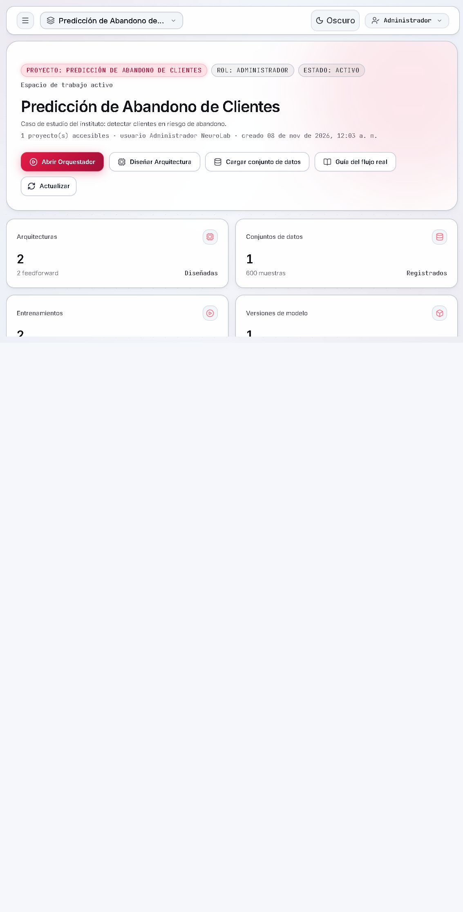
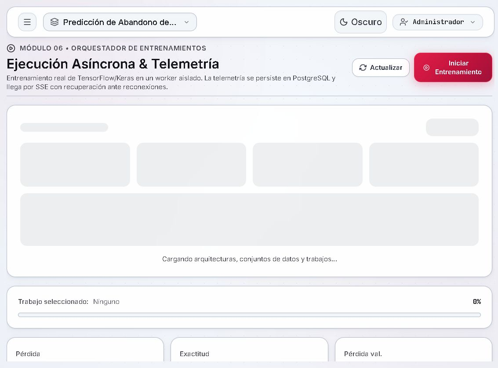
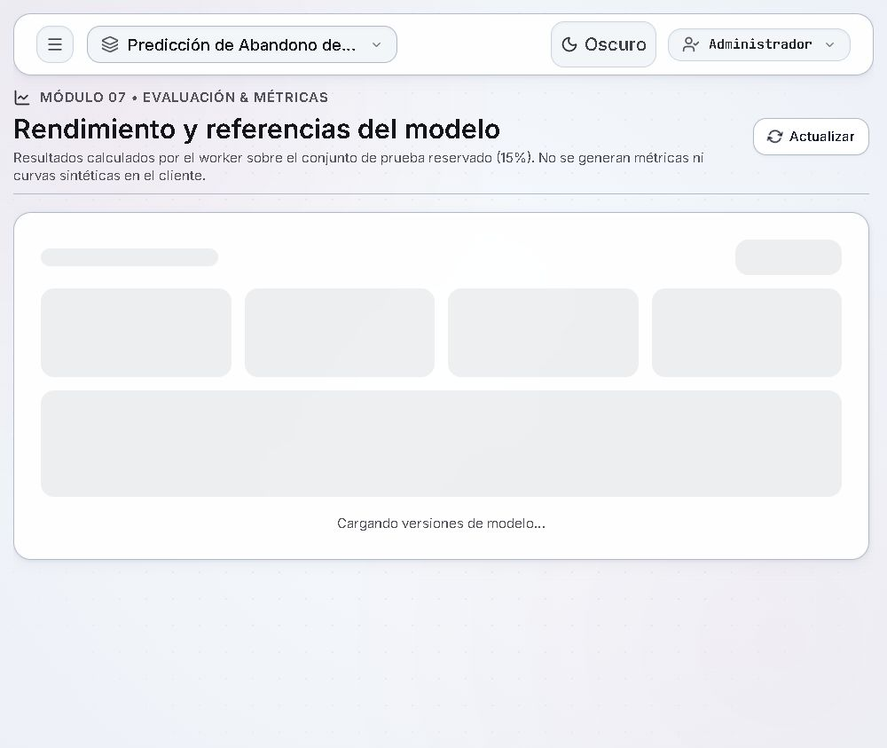

Capturas reales tomadas desde la aplicación en ejecución (API en 127.0.0.1:8000 y web en
localhost:5173) con datos reales del proyecto «Predicción de Abandono de Clientes».
No son maquetas ni datos simulados.



